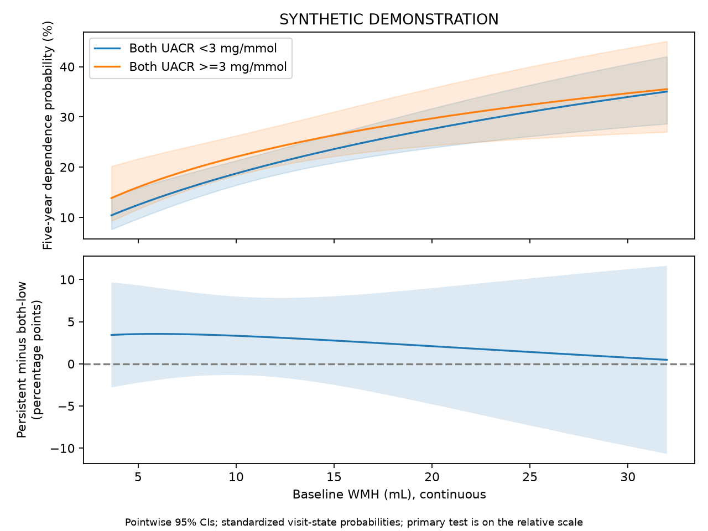

SYNTHETIC DEMONSTRATION — NOT PATIENT RESULTS
四项独立队列；不要求Hcy。患者行和ID仅保存在本地分析目录，不进入本报告。
| step | remaining | excluded_here |
|---|---|---|
| clinical_image_union | 2400 | 0 |
| adult_ischemic_stroke | 2400 | 0 |
| available_true_icv | 2400 | 0 |
| available_wmh_ml | 2400 | 0 |
| alive_at_month3 | 2400 | 0 |
| both_uacr_observed | 2282 | 118 |
| no_five_year_state_contradiction | 2282 | 0 |
| known_five_year_functional_state | 2130 | 152 |
| analysis | study | tier | family | status | n | outcome_unknown | parameters | imputations | p | statistic | df1 | df2 | method | m | primary_terms | estimate | lower | upper | ratio | ratio_lower | ratio_upper | r | p_bh_secondary |
|---|---|---|---|---|---|---|---|---|---|---|---|---|---|---|---|---|---|---|---|---|---|---|---|
| primary | kidney | primary | multinomial | ESTIMATED | 2130 | 0 | 68 | 2 | 0.6858 | 0.1637 | 1 | 1.786e+07 | Rubin scalar Wald | 2 | dependent:albuminuria_3_x_wmh_ml | -0.05766 | -0.337 | 0.2217 | 0.944 | 0.7139 | 1.248 | NaN | NaN |
| complete_case | kidney | sensitivity | multinomial | ESTIMATED | 1941 | 0 | 68 | 1 | 0.9797 | 0.0006504 | 1 | inf | Rubin scalar Wald | 1 | dependent:albuminuria_3_x_wmh_ml | 0.00392 | -0.2974 | 0.3052 | 1.004 | 0.7428 | 1.357 | NaN | NaN |
| overall_interaction | kidney | secondary | multinomial | ESTIMATED | 2130 | 0 | 68 | 2 | 0.2771 | 1.286 | 3 | 3.216e+07 | D1 pooled multivariate Wald | 2 | dependent:albuminuria_1_x_wmh_ml;dependent:albuminuria_2_x_wmh_ml;dependent:albuminuria_3_x_wmh_ml | NaN | NaN | NaN | NaN | NaN | NaN | 0.0002495 | 0.5542 |
| baseline_structure | kidney | secondary | ols | ESTIMATED | 2400 | 0 | 22 | 2 | 0.6595 | 0.1941 | 1 | 2.379e+09 | Rubin scalar Wald | 2 | uacr0_log | -0.007153 | -0.03897 | 0.02467 | NaN | NaN | NaN | NaN | 0.6595 |
| continuous_uacr3 | kidney | secondary | multinomial | ESTIMATED | 2130 | 0 | 62 | 2 | 0.4868 | 0.4836 | 1 | 2.914e+18 | Rubin scalar Wald | 2 | dependent:uacr3_log_x_wmh_ml | -0.05345 | -0.2041 | 0.09721 | 0.9479 | 0.8154 | 1.102 | NaN | 0.5842 |
| conditional_albuminuria | kidney | secondary | multinomial | ESTIMATED | 2130 | 0 | 62 | 2 | 0.225 | 1.472 | 1 | 1.239e+08 | Rubin scalar Wald | 2 | dependent:albuminuria_3 | 0.1721 | -0.1059 | 0.4501 | 1.188 | 0.8995 | 1.569 | NaN | 0.5542 |
| incremental_albuminuria | kidney | secondary | multinomial | ESTIMATED | 2130 | 0 | 62 | 2 | 0.4006 | 0.9807 | 3 | 2.538e+08 | D1 pooled multivariate Wald | 2 | dependent:albuminuria_1;dependent:albuminuria_2;dependent:albuminuria_3 | NaN | NaN | NaN | NaN | NaN | NaN | 8.878e-05 | 0.5842 |
| clinical_wmh_only | kidney | secondary | multinomial | ESTIMATED | 2130 | 0 | 56 | 2 | 6.15e-11 | 42.77 | 1 | 6.479e+06 | Rubin scalar Wald | 2 | dependent:wmh_ml | 0.3907 | 0.2736 | 0.5077 | 1.478 | 1.315 | 1.662 | NaN | 3.69e-10 |
| clinical_same_subset_core | kidney | sensitivity | multinomial | ESTIMATED | 2130 | 0 | 68 | 2 | 0.6858 | 0.1637 | 1 | 1.786e+07 | Rubin scalar Wald | 2 | dependent:albuminuria_3_x_wmh_ml | -0.05766 | -0.337 | 0.2217 | 0.944 | 0.7139 | 1.248 | NaN | NaN |
| clinical_extended | kidney | sensitivity | multinomial | ESTIMATED | 2130 | 0 | 80 | 2 | 0.6895 | 0.1596 | 1 | 7.788e+07 | Rubin scalar Wald | 2 | dependent:albuminuria_3_x_wmh_ml | -0.05699 | -0.3366 | 0.2226 | 0.9446 | 0.7142 | 1.249 | NaN | NaN |
| observation_weighted | kidney | sensitivity | multinomial | ESTIMATED | 2130 | 152 | 68 | 2 | 0.6652 | 0.1873 | 1 | 3.312e+08 | Rubin scalar Wald | 2 | dependent:albuminuria_3_x_wmh_ml | -0.06249 | -0.3455 | 0.2205 | 0.9394 | 0.7079 | 1.247 | NaN | NaN |
多分类系数取指数表示 P(该状态)/P(独立) 的比值之比，不能标为HR。联合检验显著不代表每个系数都显著。

主要检验：依赖方程中持续白蛋白尿×标准化WMH，1自由度。三个类别交互的整体检验为次要。模型含四类UACR、WMH及三个交互，在依赖和死亡方程中均估计。主要比值表示两组WMH斜率的相对概率比之比。绝对概率差是补充展示；两种尺度不要求得到相同交互结论。
| estimate | se | lower | upper | p | df | m | within_variance | between_variance | term | scale | ratio | ratio_lower | ratio_upper |
|---|---|---|---|---|---|---|---|---|---|---|---|---|---|
| -1.781 | 0.2731 | -2.317 | -1.246 | 7.175e-11 | 1.371e+04 | 2 | 0.07397 | 0.0004248 | dependent:intercept | relative_probability_ratio | 0.1684 | 0.09858 | 0.2876 |
| 0.4877 | 0.0882 | 0.3148 | 0.6605 | 3.22e-08 | 3.916e+13 | 2 | 0.007779 | 8.288e-10 | dependent:wmh_ml | relative_probability_ratio | 1.628 | 1.37 | 1.936 |
| -0.08622 | 0.1705 | -0.4204 | 0.2479 | 0.613 | 1.725e+07 | 2 | 0.02906 | 4.665e-06 | dependent:albuminuria_1 | relative_probability_ratio | 0.9174 | 0.6568 | 1.281 |
| 0.07018 | 0.1723 | -0.2675 | 0.4079 | 0.6838 | 1.409e+07 | 2 | 0.02968 | 5.274e-06 | dependent:albuminuria_2 | relative_probability_ratio | 1.073 | 0.7653 | 1.504 |
| 0.1924 | 0.1445 | -0.09086 | 0.4756 | 0.1831 | 4.734e+07 | 2 | 0.02088 | 2.023e-06 | dependent:albuminuria_3 | relative_probability_ratio | 1.212 | 0.9131 | 1.609 |
| 0.1839 | 0.1367 | -0.08413 | 0.4519 | 0.1787 | 1.278e+09 | 2 | 0.0187 | 3.486e-07 | dependent:age | relative_probability_ratio | 1.202 | 0.9193 | 1.571 |
| -0.1025 | 0.1551 | -0.4064 | 0.2014 | 0.5087 | 6.018e+07 | 2 | 0.02404 | 2.066e-06 | dependent:age_rcs | relative_probability_ratio | 0.9026 | 0.6661 | 1.223 |
| 0.01288 | 0.1124 | -0.2075 | 0.2332 | 0.9088 | 4.659e+10 | 2 | 0.01264 | 3.904e-08 | dependent:sex_2 | relative_probability_ratio | 1.013 | 0.8126 | 1.263 |
| -0.03703 | 0.1624 | -0.3553 | 0.2812 | 0.8196 | 7.124e+06 | 2 | 0.02635 | 6.585e-06 | dependent:smoking_2 | relative_probability_ratio | 0.9636 | 0.701 | 1.325 |
| 0.1303 | 0.1564 | -0.1763 | 0.4369 | 0.4049 | 1.612e+09 | 2 | 0.02447 | 4.064e-07 | dependent:smoking_3 | relative_probability_ratio | 1.139 | 0.8383 | 1.548 |
| 0.2292 | 0.1602 | -0.08469 | 0.5432 | 0.1524 | 2.376e+07 | 2 | 0.02565 | 3.509e-06 | dependent:smoking_4 | relative_probability_ratio | 1.258 | 0.9188 | 1.721 |
| 0.1882 | 0.1638 | -0.1328 | 0.5092 | 0.2506 | 3.536e+08 | 2 | 0.02683 | 9.511e-07 | dependent:drinking_2 | relative_probability_ratio | 1.207 | 0.8756 | 1.664 |
| 0.1322 | 0.1589 | -0.1792 | 0.4435 | 0.4054 | 5.41e+07 | 2 | 0.02523 | 2.287e-06 | dependent:drinking_3 | relative_probability_ratio | 1.141 | 0.836 | 1.558 |
| 0.1996 | 0.1601 | -0.1141 | 0.5133 | 0.2125 | 3.026e+09 | 2 | 0.02562 | 3.105e-07 | dependent:drinking_4 | relative_probability_ratio | 1.221 | 0.8921 | 1.671 |
| 0.08519 | 0.1131 | -0.1366 | 0.307 | 0.4515 | 7294 | 2 | 0.01265 | 9.993e-05 | dependent:hypertension_2 | relative_probability_ratio | 1.089 | 0.8723 | 1.359 |
| -0.0469 | 0.1124 | -0.2672 | 0.1734 | 0.6764 | 6.968e+06 | 2 | 0.01262 | 3.189e-06 | dependent:diabetes_2 | relative_probability_ratio | 0.9542 | 0.7655 | 1.189 |
| -0.061 | 0.1126 | -0.2817 | 0.1597 | 0.5881 | 3.756e+07 | 2 | 0.01268 | 1.38e-06 | dependent:prior_stroke_2 | relative_probability_ratio | 0.9408 | 0.7545 | 1.173 |
| 0.01769 | 0.0188 | -0.01924 | 0.05463 | 0.3472 | 535.4 | 2 | 0.0003383 | 1.019e-05 | dependent:bmi | relative_probability_ratio | 1.018 | 0.9809 | 1.056 |
| 0.1298 | 0.1814 | -0.2261 | 0.4858 | 0.4743 | 1167 | 2 | 0.03195 | 0.0006423 | dependent:education_2 | relative_probability_ratio | 1.139 | 0.7976 | 1.625 |
| -0.1617 | 0.1825 | -0.5195 | 0.1961 | 0.3758 | 8759 | 2 | 0.03296 | 0.0002373 | dependent:education_3 | relative_probability_ratio | 0.8507 | 0.5948 | 1.217 |
| -0.112 | 0.1825 | -0.47 | 0.246 | 0.5396 | 2058 | 2 | 0.03259 | 0.0004896 | dependent:education_4 | relative_probability_ratio | 0.894 | 0.625 | 1.279 |
| 0.2771 | 0.1757 | -0.06733 | 0.6215 | 0.1148 | 2.67e+05 | 2 | 0.03082 | 3.984e-05 | dependent:education_5 | relative_probability_ratio | 1.319 | 0.9349 | 1.862 |
| 0.4615 | 0.1968 | 0.07577 | 0.8473 | 0.01903 | 1.889e+09 | 2 | 0.03873 | 5.942e-07 | dependent:cysc3 | relative_probability_ratio | 1.586 | 1.079 | 2.333 |
| 0.0209 | 0.03611 | -0.04988 | 0.09169 | 0.5627 | 1.752e+07 | 2 | 0.001304 | 2.078e-07 | dependent:sbp3 | relative_probability_ratio | 1.021 | 0.9513 | 1.096 |
| 0.2403 | 0.1132 | 0.01842 | 0.4622 | 0.03378 | 2.777e+09 | 2 | 0.01282 | 1.621e-07 | dependent:raas_1 | relative_probability_ratio | 1.272 | 1.019 | 1.588 |
| 0.1718 | 0.1603 | -0.1424 | 0.4859 | 0.284 | 8.703e+07 | 2 | 0.02569 | 1.836e-06 | dependent:mrs3_1 | relative_probability_ratio | 1.187 | 0.8672 | 1.626 |
| 0.3855 | 0.1564 | 0.079 | 0.6921 | 0.0137 | 5.176e+08 | 2 | 0.02446 | 7.168e-07 | dependent:mrs3_2 | relative_probability_ratio | 1.47 | 1.082 | 1.998 |
| 0.5557 | 0.2157 | 0.1329 | 0.9786 | 0.009999 | 2.584e+10 | 2 | 0.04654 | 1.93e-07 | dependent:mrs3_3 | relative_probability_ratio | 1.743 | 1.142 | 2.661 |
| 0.8523 | 0.2379 | 0.3859 | 1.319 | 0.000341 | 6.878e+10 | 2 | 0.05662 | 1.439e-07 | dependent:mrs3_4 | relative_probability_ratio | 2.345 | 1.471 | 3.738 |
| 0.7731 | 0.3157 | 0.1544 | 1.392 | 0.01433 | 5.246e+11 | 2 | 0.09967 | 9.175e-08 | dependent:mrs3_5 | relative_probability_ratio | 2.167 | 1.167 | 4.023 |
| -0.004401 | 0.06402 | -0.1299 | 0.1211 | 0.9452 | 1.092e+11 | 2 | 0.004099 | 8.268e-09 | dependent:icv_ml | relative_probability_ratio | 0.9956 | 0.8782 | 1.129 |
| -0.2887 | 0.1668 | -0.6157 | 0.03822 | 0.08348 | 3.192e+07 | 2 | 0.02782 | 3.284e-06 | dependent:albuminuria_1_x_wmh_ml | relative_probability_ratio | 0.7492 | 0.5403 | 1.039 |
| -0.2182 | 0.172 | -0.5553 | 0.119 | 0.2047 | 3.824e+07 | 2 | 0.02958 | 3.19e-06 | dependent:albuminuria_2_x_wmh_ml | relative_probability_ratio | 0.804 | 0.5739 | 1.126 |
| -0.05766 | 0.1425 | -0.337 | 0.2217 | 0.6858 | 1.786e+07 | 2 | 0.02031 | 3.204e-06 | dependent:albuminuria_3_x_wmh_ml | relative_probability_ratio | 0.944 | 0.7139 | 1.248 |
| -1.862 | 0.3121 | -2.474 | -1.25 | 2.431e-09 | 2.771e+05 | 2 | 0.09722 | 0.0001234 | dead:intercept | relative_probability_ratio | 0.1554 | 0.08427 | 0.2864 |
| 0.1644 | 0.09973 | -0.03104 | 0.3599 | 0.09921 | 4.052e+11 | 2 | 0.009945 | 1.042e-08 | dead:wmh_ml | relative_probability_ratio | 1.179 | 0.9694 | 1.433 |
| -0.3023 | 0.2029 | -0.7 | 0.09547 | 0.1364 | 8.998e+07 | 2 | 0.04118 | 2.894e-06 | dead:albuminuria_1 | relative_probability_ratio | 0.7391 | 0.4966 | 1.1 |
| -0.1293 | 0.2086 | -0.538 | 0.2795 | 0.5355 | 5.426e+06 | 2 | 0.04348 | 1.245e-05 | dead:albuminuria_2 | relative_probability_ratio | 0.8788 | 0.5839 | 1.323 |
| -0.02325 | 0.1709 | -0.3583 | 0.3117 | 0.8918 | 2.14e+08 | 2 | 0.02921 | 1.331e-06 | dead:albuminuria_3 | relative_probability_ratio | 0.977 | 0.6989 | 1.366 |
| 0.2293 | 0.1644 | -0.09292 | 0.5516 | 0.1631 | 2.303e+07 | 2 | 0.02703 | 3.756e-06 | dead:age | relative_probability_ratio | 1.258 | 0.9113 | 1.736 |
| 0.03646 | 0.1775 | -0.3114 | 0.3843 | 0.8372 | 5.262e+07 | 2 | 0.03149 | 2.894e-06 | dead:age_rcs | relative_probability_ratio | 1.037 | 0.7325 | 1.469 |
| -0.158 | 0.1326 | -0.4178 | 0.1019 | 0.2336 | 5.859e+12 | 2 | 0.01758 | 4.843e-09 | dead:sex_2 | relative_probability_ratio | 0.8539 | 0.6585 | 1.107 |
| -0.1448 | 0.1792 | -0.4961 | 0.2065 | 0.4192 | 1.047e+11 | 2 | 0.03212 | 6.62e-08 | dead:smoking_2 | relative_probability_ratio | 0.8652 | 0.6089 | 1.229 |
| -0.2745 | 0.1843 | -0.6357 | 0.08675 | 0.1364 | 1.65e+10 | 2 | 0.03397 | 1.763e-07 | dead:smoking_3 | relative_probability_ratio | 0.76 | 0.5295 | 1.091 |
| -0.1505 | 0.1864 | -0.5158 | 0.2148 | 0.4195 | 2.344e+10 | 2 | 0.03474 | 1.513e-07 | dead:smoking_4 | relative_probability_ratio | 0.8603 | 0.597 | 1.24 |
| 0.4512 | 0.1835 | 0.09158 | 0.8108 | 0.01393 | 2.731e+06 | 2 | 0.03365 | 1.358e-05 | dead:drinking_2 | relative_probability_ratio | 1.57 | 1.096 | 2.25 |
| 0.006086 | 0.1919 | -0.37 | 0.3821 | 0.9747 | 5.817e+11 | 2 | 0.03681 | 3.218e-08 | dead:drinking_3 | relative_probability_ratio | 1.006 | 0.6908 | 1.465 |
| 0.05873 | 0.1923 | -0.3182 | 0.4357 | 0.7601 | 1.023e+09 | 2 | 0.03699 | 7.709e-07 | dead:drinking_4 | relative_probability_ratio | 1.06 | 0.7274 | 1.546 |
| 0.187 | 0.1367 | -0.08208 | 0.4561 | 0.1724 | 278.7 | 2 | 0.01756 | 0.0007461 | dead:hypertension_2 | relative_probability_ratio | 1.206 | 0.9212 | 1.578 |
| -0.1385 | 0.132 | -0.3973 | 0.1204 | 0.2944 | 3.187e+06 | 2 | 0.01743 | 6.512e-06 | dead:diabetes_2 | relative_probability_ratio | 0.8707 | 0.6722 | 1.128 |
| 0.3232 | 0.133 | 0.06248 | 0.584 | 0.01512 | 4.016e+11 | 2 | 0.0177 | 1.862e-08 | dead:prior_stroke_2 | relative_probability_ratio | 1.382 | 1.064 | 1.793 |
| 0.02446 | 0.0216 | -0.01789 | 0.0668 | 0.2576 | 2.706e+05 | 2 | 0.0004659 | 5.982e-07 | dead:bmi | relative_probability_ratio | 1.025 | 0.9823 | 1.069 |
| -0.215 | 0.2217 | -0.6495 | 0.2195 | 0.3322 | 7.339e+04 | 2 | 0.04896 | 0.0001209 | dead:education_2 | relative_probability_ratio | 0.8066 | 0.5223 | 1.245 |
| 0.01642 | 0.2047 | -0.3847 | 0.4176 | 0.936 | 5.408e+05 | 2 | 0.04183 | 3.797e-05 | dead:education_3 | relative_probability_ratio | 1.017 | 0.6806 | 1.518 |
| 0.07779 | 0.2025 | -0.3191 | 0.4747 | 0.7009 | 3.362e+05 | 2 | 0.04094 | 4.715e-05 | dead:education_4 | relative_probability_ratio | 1.081 | 0.7268 | 1.608 |
| -0.004218 | 0.2136 | -0.4228 | 0.4144 | 0.9842 | 1.77e+05 | 2 | 0.0455 | 7.226e-05 | dead:education_5 | relative_probability_ratio | 0.9958 | 0.6552 | 1.513 |
| -0.2039 | 0.2332 | -0.661 | 0.2533 | 0.382 | 1.834e+04 | 2 | 0.054 | 0.0002678 | dead:cysc3 | relative_probability_ratio | 0.8156 | 0.5163 | 1.288 |
| 0.04816 | 0.04295 | -0.03602 | 0.1323 | 0.2621 | 9.073e+04 | 2 | 0.001839 | 4.083e-06 | dead:sbp3 | relative_probability_ratio | 1.049 | 0.9646 | 1.142 |
| 0.2657 | 0.133 | 0.005078 | 0.5264 | 0.0457 | 1.212e+09 | 2 | 0.01769 | 3.386e-07 | dead:raas_1 | relative_probability_ratio | 1.304 | 1.005 | 1.693 |
| -0.08651 | 0.1841 | -0.4474 | 0.2743 | 0.6384 | 1.366e+07 | 2 | 0.03389 | 6.114e-06 | dead:mrs3_1 | relative_probability_ratio | 0.9171 | 0.6393 | 1.316 |
| 0.1482 | 0.1789 | -0.2024 | 0.4987 | 0.4075 | 1.939e+07 | 2 | 0.03199 | 4.844e-06 | dead:mrs3_2 | relative_probability_ratio | 1.16 | 0.8167 | 1.647 |
| 0.314 | 0.2468 | -0.1698 | 0.7977 | 0.2034 | 1.549e+06 | 2 | 0.06087 | 3.263e-05 | dead:mrs3_3 | relative_probability_ratio | 1.369 | 0.8438 | 2.22 |
| 0.3413 | 0.289 | -0.2251 | 0.9077 | 0.2375 | 3.772e+11 | 2 | 0.08351 | 9.064e-08 | dead:mrs3_4 | relative_probability_ratio | 1.407 | 0.7985 | 2.479 |
| 0.6083 | 0.3565 | -0.09039 | 1.307 | 0.08794 | 6.57e+10 | 2 | 0.1271 | 3.305e-07 | dead:mrs3_5 | relative_probability_ratio | 1.837 | 0.9136 | 3.695 |
| -0.02965 | 0.07531 | -0.1773 | 0.118 | 0.6938 | 6.968e+08 | 2 | 0.005671 | 1.432e-07 | dead:icv_ml | relative_probability_ratio | 0.9708 | 0.8376 | 1.125 |
| -0.3188 | 0.1997 | -0.7102 | 0.07272 | 0.1105 | 1.095e+07 | 2 | 0.03988 | 8.036e-06 | dead:albuminuria_1_x_wmh_ml | relative_probability_ratio | 0.727 | 0.4915 | 1.075 |
| 0.2849 | 0.1989 | -0.1048 | 0.6747 | 0.1519 | 1.02e+11 | 2 | 0.03955 | 8.254e-08 | dead:albuminuria_2_x_wmh_ml | relative_probability_ratio | 1.33 | 0.9005 | 1.963 |
| 0.1663 | 0.1669 | -0.1607 | 0.4934 | 0.3189 | 8.417e+08 | 2 | 0.02784 | 6.398e-07 | dead:albuminuria_3_x_wmh_ml | relative_probability_ratio | 1.181 | 0.8515 | 1.638 |
| wmh_ml | support_min | support_max | both_low_n | persistent_n | status | both_low_probability | both_low_lower | both_low_upper | persistent_probability | persistent_lower | persistent_upper | difference_estimate | difference_lower | difference_upper | relative_probability_ratio | ratio_lower | ratio_upper | ci |
|---|---|---|---|---|---|---|---|---|---|---|---|---|---|---|---|---|---|---|
| 3.401 | 3.401 | 33.74 | 1067 | 456 | OUTSIDE_OBSERVED_SUPPORT | NaN | NaN | NaN | NaN | NaN | NaN | NaN | NaN | NaN | NaN | NaN | NaN | NaN |
| 3.635 | 3.401 | 33.74 | 1067 | 456 | ESTIMATED | 0.1041 | 0.07605 | 0.1408 | 0.1383 | 0.09256 | 0.2017 | 0.03428 | -0.02787 | 0.09643 | 1.335 | 0.7458 | 2.389 | pointwise delta + Rubin; fixed covariate distribution |
| 3.88 | 3.401 | 33.74 | 1067 | 456 | ESTIMATED | 0.108 | 0.08 | 0.1442 | 0.1425 | 0.09702 | 0.2045 | 0.03456 | -0.02686 | 0.09598 | 1.328 | 0.7585 | 2.324 | pointwise delta + Rubin; fixed covariate distribution |
| 4.139 | 3.401 | 33.74 | 1067 | 456 | ESTIMATED | 0.112 | 0.08412 | 0.1477 | 0.1468 | 0.1016 | 0.2074 | 0.03481 | -0.02581 | 0.09543 | 1.321 | 0.7711 | 2.263 | pointwise delta + Rubin; fixed covariate distribution |
| 4.411 | 3.401 | 33.74 | 1067 | 456 | ESTIMATED | 0.1162 | 0.08841 | 0.1512 | 0.1512 | 0.1064 | 0.2104 | 0.03502 | -0.02473 | 0.09477 | 1.314 | 0.7837 | 2.203 | pointwise delta + Rubin; fixed covariate distribution |
| 4.698 | 3.401 | 33.74 | 1067 | 456 | ESTIMATED | 0.1205 | 0.09288 | 0.1549 | 0.1557 | 0.1113 | 0.2134 | 0.0352 | -0.02362 | 0.09402 | 1.307 | 0.7962 | 2.146 | pointwise delta + Rubin; fixed covariate distribution |
| 5 | 3.401 | 33.74 | 1067 | 456 | ESTIMATED | 0.1249 | 0.09753 | 0.1586 | 0.1602 | 0.1164 | 0.2165 | 0.03534 | -0.02249 | 0.09317 | 1.3 | 0.8086 | 2.091 | pointwise delta + Rubin; fixed covariate distribution |
| 5.318 | 3.401 | 33.74 | 1067 | 456 | ESTIMATED | 0.1295 | 0.1024 | 0.1624 | 0.1649 | 0.1216 | 0.2197 | 0.03544 | -0.02134 | 0.09222 | 1.294 | 0.8208 | 2.039 | pointwise delta + Rubin; fixed covariate distribution |
| 5.653 | 3.401 | 33.74 | 1067 | 456 | ESTIMATED | 0.1342 | 0.1074 | 0.1664 | 0.1696 | 0.127 | 0.2229 | 0.0355 | -0.0202 | 0.09119 | 1.287 | 0.8327 | 1.989 | pointwise delta + Rubin; fixed covariate distribution |
| 6.006 | 3.401 | 33.74 | 1067 | 456 | ESTIMATED | 0.139 | 0.1125 | 0.1704 | 0.1745 | 0.1325 | 0.2263 | 0.03551 | -0.01908 | 0.09009 | 1.28 | 0.8443 | 1.941 | pointwise delta + Rubin; fixed covariate distribution |
| 6.377 | 3.401 | 33.74 | 1067 | 456 | ESTIMATED | 0.144 | 0.1179 | 0.1746 | 0.1794 | 0.1381 | 0.2298 | 0.03547 | -0.01798 | 0.08891 | 1.274 | 0.8555 | 1.896 | pointwise delta + Rubin; fixed covariate distribution |
| 6.768 | 3.401 | 33.74 | 1067 | 456 | ESTIMATED | 0.1491 | 0.1234 | 0.179 | 0.1845 | 0.1438 | 0.2334 | 0.03538 | -0.01693 | 0.08769 | 1.267 | 0.8661 | 1.853 | pointwise delta + Rubin; fixed covariate distribution |
| 7.15 | 3.401 | 33.74 | 1067 | 456 | ESTIMATED | 0.1539 | 0.1287 | 0.1831 | 0.1892 | 0.1492 | 0.2369 | 0.03525 | -0.01602 | 0.08652 | 1.261 | 0.8754 | 1.816 | pointwise delta + Rubin; fixed covariate distribution |
| 7.18 | 3.401 | 33.74 | 1067 | 456 | ESTIMATED | 0.1543 | 0.1291 | 0.1834 | 0.1896 | 0.1497 | 0.2372 | 0.03524 | -0.01595 | 0.08643 | 1.26 | 0.8761 | 1.813 | pointwise delta + Rubin; fixed covariate distribution |
| 7.614 | 3.401 | 33.74 | 1067 | 456 | ESTIMATED | 0.1597 | 0.1349 | 0.1881 | 0.1948 | 0.1555 | 0.2411 | 0.03505 | -0.01507 | 0.08516 | 1.254 | 0.8852 | 1.776 | pointwise delta + Rubin; fixed covariate distribution |
| 8.07 | 3.401 | 33.74 | 1067 | 456 | ESTIMATED | 0.1653 | 0.1409 | 0.1929 | 0.2001 | 0.1615 | 0.2452 | 0.03479 | -0.01431 | 0.0839 | 1.247 | 0.8934 | 1.741 | pointwise delta + Rubin; fixed covariate distribution |
| 8.551 | 3.401 | 33.74 | 1067 | 456 | ESTIMATED | 0.171 | 0.147 | 0.1979 | 0.2054 | 0.1674 | 0.2495 | 0.03448 | -0.01372 | 0.08268 | 1.241 | 0.9004 | 1.71 | pointwise delta + Rubin; fixed covariate distribution |
| 9.057 | 3.401 | 33.74 | 1067 | 456 | ESTIMATED | 0.1768 | 0.1532 | 0.2032 | 0.2109 | 0.1734 | 0.2541 | 0.03411 | -0.01332 | 0.08154 | 1.234 | 0.9061 | 1.681 | pointwise delta + Rubin; fixed covariate distribution |
| 9.59 | 3.401 | 33.74 | 1067 | 456 | ESTIMATED | 0.1828 | 0.1594 | 0.2087 | 0.2165 | 0.1793 | 0.2589 | 0.03367 | -0.01316 | 0.0805 | 1.228 | 0.9103 | 1.656 | pointwise delta + Rubin; fixed covariate distribution |
| 10.15 | 3.401 | 33.74 | 1067 | 456 | ESTIMATED | 0.1889 | 0.1657 | 0.2146 | 0.2221 | 0.1851 | 0.2641 | 0.03317 | -0.01328 | 0.07961 | 1.221 | 0.9128 | 1.634 | pointwise delta + Rubin; fixed covariate distribution |
| 10.62 | 3.401 | 33.74 | 1067 | 456 | ESTIMATED | 0.194 | 0.1708 | 0.2194 | 0.2267 | 0.1897 | 0.2684 | 0.03271 | -0.0136 | 0.07903 | 1.216 | 0.9135 | 1.62 | pointwise delta + Rubin; fixed covariate distribution |
| 10.74 | 3.401 | 33.74 | 1067 | 456 | ESTIMATED | 0.1952 | 0.172 | 0.2207 | 0.2278 | 0.1909 | 0.2695 | 0.03259 | -0.01372 | 0.07891 | 1.215 | 0.9135 | 1.616 | pointwise delta + Rubin; fixed covariate distribution |
| 11.37 | 3.401 | 33.74 | 1067 | 456 | ESTIMATED | 0.2017 | 0.1783 | 0.2272 | 0.2336 | 0.1965 | 0.2754 | 0.03195 | -0.01452 | 0.07842 | 1.209 | 0.9122 | 1.602 | pointwise delta + Rubin; fixed covariate distribution |
| 12.02 | 3.401 | 33.74 | 1067 | 456 | ESTIMATED | 0.2082 | 0.1846 | 0.234 | 0.2395 | 0.2019 | 0.2816 | 0.03124 | -0.01572 | 0.07819 | 1.202 | 0.9089 | 1.591 | pointwise delta + Rubin; fixed covariate distribution |
| 12.71 | 3.401 | 33.74 | 1067 | 456 | ESTIMATED | 0.215 | 0.1908 | 0.2413 | 0.2454 | 0.2072 | 0.2882 | 0.03045 | -0.01735 | 0.07825 | 1.196 | 0.9035 | 1.584 | pointwise delta + Rubin; fixed covariate distribution |
| 13.44 | 3.401 | 33.74 | 1067 | 456 | ESTIMATED | 0.2219 | 0.1969 | 0.249 | 0.2514 | 0.2122 | 0.2952 | 0.02959 | -0.01942 | 0.0786 | 1.19 | 0.8961 | 1.58 | pointwise delta + Rubin; fixed covariate distribution |
| 14.2 | 3.401 | 33.74 | 1067 | 456 | ESTIMATED | 0.2289 | 0.2029 | 0.2571 | 0.2575 | 0.2171 | 0.3026 | 0.02865 | -0.02196 | 0.07926 | 1.184 | 0.8869 | 1.58 | pointwise delta + Rubin; fixed covariate distribution |
| 15.01 | 3.401 | 33.74 | 1067 | 456 | ESTIMATED | 0.2361 | 0.2088 | 0.2656 | 0.2637 | 0.2217 | 0.3104 | 0.02763 | -0.02497 | 0.08022 | 1.178 | 0.8759 | 1.583 | pointwise delta + Rubin; fixed covariate distribution |
| 15.86 | 3.401 | 33.74 | 1067 | 456 | ESTIMATED | 0.2434 | 0.2147 | 0.2746 | 0.2699 | 0.2262 | 0.3186 | 0.02653 | -0.02843 | 0.08149 | 1.171 | 0.8633 | 1.59 | pointwise delta + Rubin; fixed covariate distribution |
| 16.51 | 3.401 | 33.74 | 1067 | 456 | ESTIMATED | 0.2488 | 0.2189 | 0.2814 | 0.2745 | 0.2293 | 0.3249 | 0.02568 | -0.03124 | 0.08259 | 1.167 | 0.8533 | 1.596 | pointwise delta + Rubin; fixed covariate distribution |
| 16.75 | 3.401 | 33.74 | 1067 | 456 | ESTIMATED | 0.2508 | 0.2204 | 0.2839 | 0.2762 | 0.2304 | 0.3272 | 0.02535 | -0.03233 | 0.08304 | 1.165 | 0.8495 | 1.599 | pointwise delta + Rubin; fixed covariate distribution |
| 17.69 | 3.401 | 33.74 | 1067 | 456 | ESTIMATED | 0.2584 | 0.2261 | 0.2936 | 0.2825 | 0.2345 | 0.3361 | 0.02409 | -0.03667 | 0.08485 | 1.159 | 0.8346 | 1.61 | pointwise delta + Rubin; fixed covariate distribution |
| 18.68 | 3.401 | 33.74 | 1067 | 456 | ESTIMATED | 0.2662 | 0.2317 | 0.3037 | 0.2889 | 0.2383 | 0.3454 | 0.02275 | -0.04142 | 0.08691 | 1.153 | 0.8187 | 1.625 | pointwise delta + Rubin; fixed covariate distribution |
| 19.73 | 3.401 | 33.74 | 1067 | 456 | ESTIMATED | 0.2741 | 0.2373 | 0.3142 | 0.2954 | 0.2421 | 0.3549 | 0.02132 | -0.04655 | 0.0892 | 1.147 | 0.8022 | 1.641 | pointwise delta + Rubin; fixed covariate distribution |
| 20.82 | 3.401 | 33.74 | 1067 | 456 | ESTIMATED | 0.2821 | 0.2428 | 0.325 | 0.3019 | 0.2456 | 0.3648 | 0.01981 | -0.05205 | 0.09168 | 1.141 | 0.7852 | 1.659 | pointwise delta + Rubin; fixed covariate distribution |
| 21.98 | 3.401 | 33.74 | 1067 | 456 | ESTIMATED | 0.2902 | 0.2483 | 0.3361 | 0.3084 | 0.2491 | 0.3749 | 0.01822 | -0.05789 | 0.09434 | 1.135 | 0.7677 | 1.679 | pointwise delta + Rubin; fixed covariate distribution |
| 23.2 | 3.401 | 33.74 | 1067 | 456 | ESTIMATED | 0.2985 | 0.2537 | 0.3474 | 0.315 | 0.2524 | 0.3852 | 0.01655 | -0.06406 | 0.09716 | 1.129 | 0.7501 | 1.701 | pointwise delta + Rubin; fixed covariate distribution |
| 24.48 | 3.401 | 33.74 | 1067 | 456 | ESTIMATED | 0.3069 | 0.2592 | 0.359 | 0.3217 | 0.2556 | 0.3957 | 0.01479 | -0.07053 | 0.1001 | 1.124 | 0.7323 | 1.724 | pointwise delta + Rubin; fixed covariate distribution |
| 25.83 | 3.401 | 33.74 | 1067 | 456 | ESTIMATED | 0.3154 | 0.2647 | 0.3709 | 0.3283 | 0.2587 | 0.4064 | 0.01295 | -0.07728 | 0.1032 | 1.118 | 0.7144 | 1.749 | pointwise delta + Rubin; fixed covariate distribution |
| 27.26 | 3.401 | 33.74 | 1067 | 456 | ESTIMATED | 0.324 | 0.2701 | 0.383 | 0.335 | 0.2617 | 0.4173 | 0.01103 | -0.08429 | 0.1063 | 1.112 | 0.6966 | 1.775 | pointwise delta + Rubin; fixed covariate distribution |
| 28.75 | 3.401 | 33.74 | 1067 | 456 | ESTIMATED | 0.3327 | 0.2756 | 0.3953 | 0.3418 | 0.2646 | 0.4283 | 0.009029 | -0.09155 | 0.1096 | 1.106 | 0.679 | 1.802 | pointwise delta + Rubin; fixed covariate distribution |
| 30.33 | 3.401 | 33.74 | 1067 | 456 | ESTIMATED | 0.3416 | 0.281 | 0.4078 | 0.3485 | 0.2675 | 0.4394 | 0.006947 | -0.09903 | 0.1129 | 1.1 | 0.6614 | 1.831 | pointwise delta + Rubin; fixed covariate distribution |
| 31.99 | 3.401 | 33.74 | 1067 | 456 | ESTIMATED | 0.3505 | 0.2865 | 0.4204 | 0.3553 | 0.2702 | 0.4507 | 0.004788 | -0.1067 | 0.1163 | 1.095 | 0.6441 | 1.86 | pointwise delta + Rubin; fixed covariate distribution |
| 33.74 | 3.401 | 33.74 | 1067 | 456 | OUTSIDE_OBSERVED_SUPPORT | NaN | NaN | NaN | NaN | NaN | NaN | NaN | NaN | NaN | NaN | NaN | NaN | NaN |
完成模型 2；参数数 68；最大设计条件数 4.79。完整诊断见 fit_diagnostics.json。
缺失处理依赖MAR假设。功能状态图为固定访视结局的标准化概率，不是首次失能的累积发生率。血压分析是实测血压的条件关联。次要分析报告研究内BH-FDR；总汇报另列本版固定四项Holm校正。